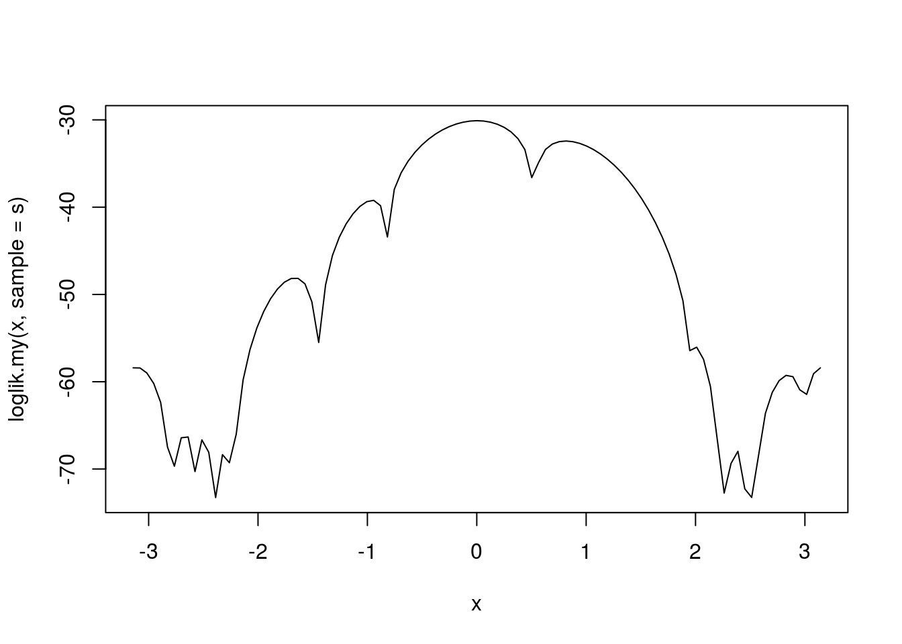
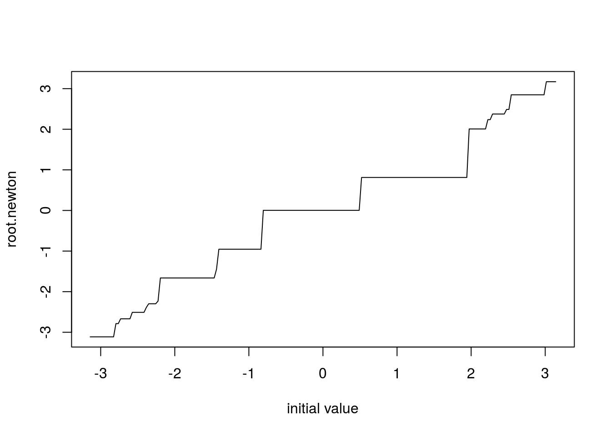

Problem 2 Exercise 3.3.2
##' define the loglikelihood function
loglik.my0 <- function(theta, sample) {
n <- length(sample)
if (sum(sample >=0 & sample <= 2*pi) < n) {
print("sample is out of range")
} else if(theta < -pi | theta > pi) {
print("theta is out of range")
} else {
l <- sum(log(1-cos(sample-theta))) - n * log(2*pi)
return(l)
}
}
loglik.my <- function(theta, sample) {
l <- sapply(theta, FUN = loglik.my0, sample = sample)
l
}
s <- c(3.91, 4.85, 2.28, 4.06, 3.70, 4.04, 5.46, 3.53, 2.28, 1.96,
2.53, 3.88, 2.22, 3.47, 4.82, 2.46, 2.99, 2.54, 0.52)
curve(loglik.my(x, sample = s), -pi, pi)
\[\begin{align*} E(X|\theta) &= \int_0^{2\pi}x\frac{1-\cos(x-\theta)}{2\pi}dx\\ &= \frac{1}{2\pi} \int_0^{2\pi}xdx - \frac{1}{2\pi}\int_0^{2\pi} x\cos(x-\theta)dx\\ &= \left.\frac{1}{2\pi} \times \frac{1}{2}\right\vert_0^{2\pi} - \frac{1}{2\pi}\int_0^{2\pi}xd\sin(x-\theta)\\ &= \pi - \frac{1}{2\pi} \left[\left.x\sin(x-\theta)\right\vert_0^ {2\pi}-\int_0^{2\pi}\sin(x-\theta)dx\right]\\ &= \pi - \frac{1}{2\pi} \left[2\pi\sin(2\pi-\theta)+\cos(x-\theta) \left.\right\vert_0^{2\pi}\right]\\ &= \pi - \frac{1}{2\pi} \left[-2\pi\sin(\theta)\right]\\ &= \pi + \sin(\theta)\\ &= \bar{X}_n\\ \end{align*}\]\[\Rightarrow\tilde{\theta}_n = \arcsin(\bar{X}_n - \pi)\]
library(pracma)
theta_0 <- asin(mean(s) - pi)
##' define derivitive of log-likelihood function
dev.loglik0 <- function(theta, sample) {
dev.l <- sum(sin(theta-sample)/(1-cos(theta-sample)))
dev.l
}
dev.loglik <- function(theta, sample) {
dev.l <- sapply(theta, FUN = dev.loglik0, sample = sample)
}
x1 <- newtonRaphson(fun = dev.loglik, x0 = theta_0, sample = s)$root
x2 <- newtonRaphson(fun = dev.loglik, x0 = -2.7, sample = s)$root
x3 <- newtonRaphson(fun = dev.loglik, x0 = 2.7, sample = s)$root
x1## [1] 0.003118157x2## [1] -2.668857x3## [1] 2.848415Newton-Raphson method gives 0.0031 as MLE when MOM 0.095 is initial value, -2.669 as MLE when -2.7 is initial value, 2.848 as MLE when 2.7 is initial value.
n <- 200
init <- seq(-pi, pi, length.out = n)
root.newton <- rep(0, n)
for (i in 1:n) root.newton[i] <- newtonRaphson(fun = dev.loglik, x0 = init[i],
sample = s)$root
plot(init, root.newton, type = "l", xlab = "initial value")